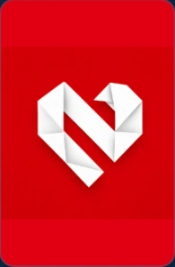
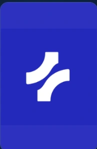
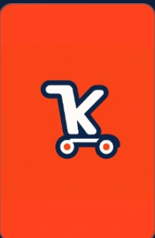
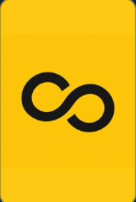
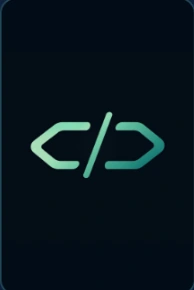
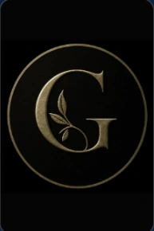
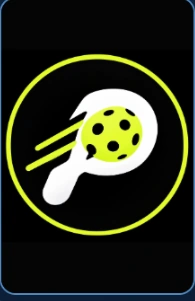
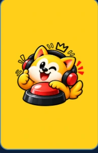
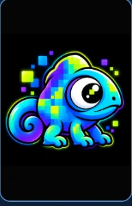

DIGITAL PRODUCT
NakNak
A family-safety experience with check-ins, SOS support and caregiver coordination.
Family safety · Product experienceIn development
BEYOND PROFESSIONAL WORK
Selected brands, digital products and business initiatives developed alongside my marketing career. Explore each project to understand the problem, my role and its current stage.
Nine selected brands and digital product initiatives. These show the breadth of my problem-solving, design and product thinking beyond employment roles.

A family-safety experience with check-ins, SOS support and caregiver coordination.
Family safety · Product experience
Remote staffing and workforce support, connecting businesses with Filipino talent.
Staffing · Service operations
An offline-conscious POS concept for Filipino microbusinesses, sales and customer credit.
Local commerce · POS
Brand strategy, visual storytelling and campaign systems for growing organizations.
Marketing · Creative direction
An independent product studio exploring useful software and automation.
Product thinking · Technology
An apparel brand concept with a restrained black-and-gold visual identity.
Fashion · Brand direction
A pickleball community concept for discovering players, games and courts.
Sports · Community
A customizable macOS soundboard designed for quick playback and keyboard shortcuts.
Creative software · macOS
An icon-library concept exploring a playful identity and consistent visual systems.
Iconography · Visual systemsFour earlier initiatives remain part of my independent portfolio, alongside the nine projects above.
An internal workspace for people, clients, VAs, shifts, tasks, files and approvals. Collective Orbit explores AI-assisted task routing within the same workspace. It is not offered as public SaaS.
A native app concept for contributions, budgets, partner invitations, split bills, reminders and settlements.
A PWA concept for owners and rental operators to manage units, rent, billing, communication and reporting.
A mission-first, free-access autism support experience for children and families, emphasizing calm interactions and caregiver controls.
These are independent initiatives in different stages of development, not a list of launched SaaS products. The Collectives is presented here as evidence of my entrepreneurial and creative work, not something this portfolio is selling.